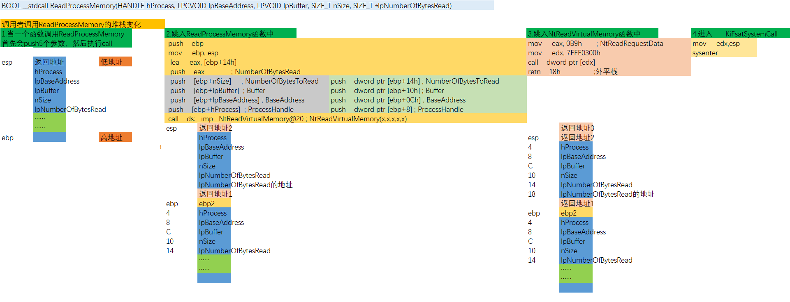
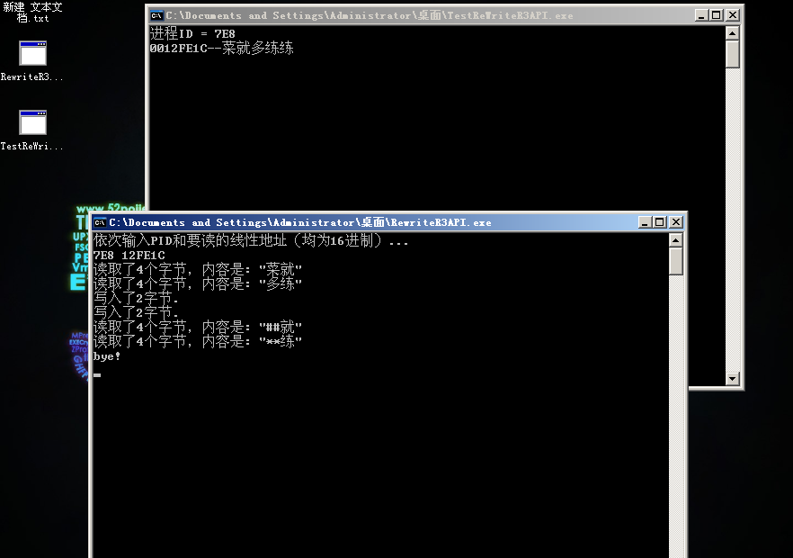
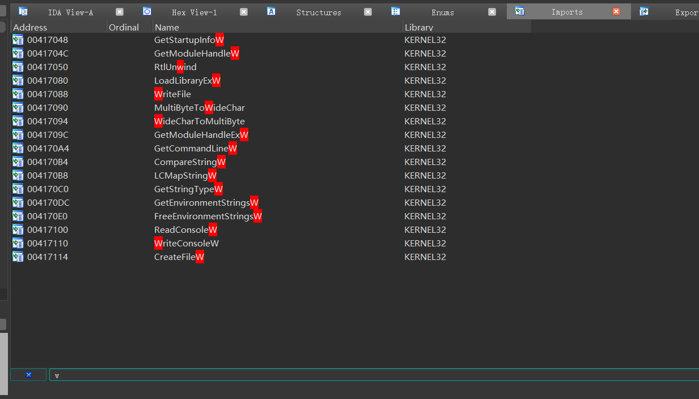
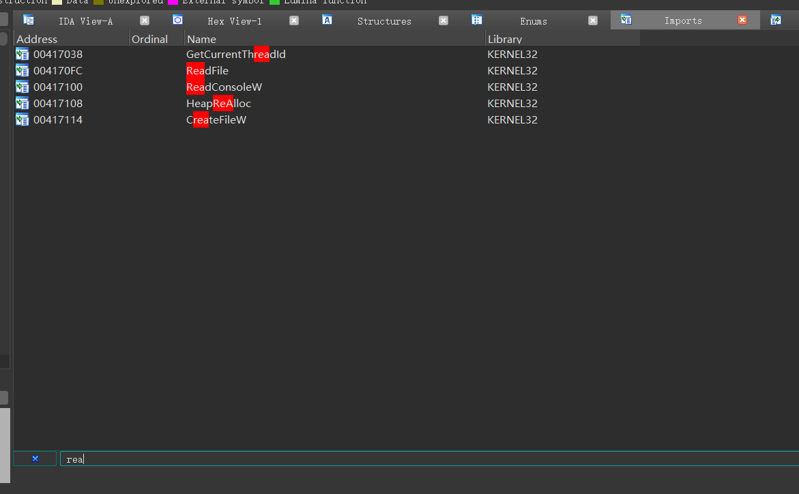

# 分析 3 环 API ReadProcessMemory
用 IDA 分析 kernel32.dll, 找到 ReadProcessMemory 函数，因为这个函数会进入 R0，所以我们对其分析 API 的调用过程。
.text:7C8021D0 ; BOOL __stdcall ReadProcessMemory(HANDLE hProcess, LPCVOID lpBaseAddress, LPVOID lpBuffer, SIZE_T nSize, SIZE_T *lpNumberOfBytesRead) | |
.text:7C8021D0 public _ReadProcessMemory@20 | |
.text:7C8021D0 _ReadProcessMemory@20 proc near ; CODE XREF: GetProcessVersion(x)+2F18B↓p | |
.text:7C8021D0 ; GetProcessVersion(x)+2F1AA↓p ... | |
.text:7C8021D0 | |
.text:7C8021D0 hProcess = dword ptr 8 | |
.text:7C8021D0 lpBaseAddress = dword ptr 0Ch | |
.text:7C8021D0 lpBuffer = dword ptr 10h | |
.text:7C8021D0 nSize = dword ptr 14h | |
.text:7C8021D0 lpNumberOfBytesRead= dword ptr 18h | |
.text:7C8021D0 | |
.text:7C8021D0 mov edi, edi | |
.text:7C8021D2 push ebp | |
.text:7C8021D3 mov ebp, esp | |
.text:7C8021D5 lea eax, [ebp+nSize] | |
.text:7C8021D8 push eax ; NumberOfBytesRead | |
.text:7C8021D9 push [ebp+nSize] ; NumberOfBytesToRead | |
.text:7C8021DC push [ebp+lpBuffer] ; Buffer | |
.text:7C8021DF push [ebp+lpBaseAddress] ; BaseAddress | |
.text:7C8021E2 push [ebp+hProcess] ; ProcessHandle | |
.text:7C8021E5 call ds:__imp__NtReadVirtualMemory@20 ; NtReadVirtualMemory(x,x,x,x,x) | |
.text:7C8021EB mov ecx, [ebp+lpNumberOfBytesRead] | |
.text:7C8021EE test ecx, ecx | |
.text:7C8021F0 jnz short loc_7C8021FD | |
.text:7C8021F2 | |
.text:7C8021F2 loc_7C8021F2: ; CODE XREF: ReadProcessMemory(x,x,x,x,x)+32↓j | |
.text:7C8021F2 test eax, eax | |
.text:7C8021F4 jl short loc_7C802204 | |
.text:7C8021F6 xor eax, eax | |
.text:7C8021F8 inc eax | |
.text:7C8021F9 | |
.text:7C8021F9 loc_7C8021F9: ; CODE XREF: ReadProcessMemory(x,x,x,x,x)+3C↓j | |
.text:7C8021F9 pop ebp | |
.text:7C8021FA retn 14h | |
.text:7C8021FD ; --------------------------------------------------------------------------- | |
.text:7C8021FD | |
.text:7C8021FD loc_7C8021FD: ; CODE XREF: ReadProcessMemory(x,x,x,x,x)+20↑j | |
.text:7C8021FD mov edx, [ebp+nSize] | |
.text:7C802200 mov [ecx], edx | |
.text:7C802202 jmp short loc_7C8021F2 | |
.text:7C802204 ; --------------------------------------------------------------------------- | |
.text:7C802204 | |
.text:7C802204 loc_7C802204: ; CODE XREF: ReadProcessMemory(x,x,x,x,x)+24↑j | |
.text:7C802204 push eax ; Status | |
.text:7C802205 call _BaseSetLastNTError@4 ; BaseSetLastNTError(x) | |
.text:7C80220A xor eax, eax | |
.text:7C80220C jmp short loc_7C8021F9 | |
.text:7C80220C _ReadProcessMemory@20 endp |
由 .text:7C8021E5 call ds:__imp__NtReadVirtualMemory@20 ; NtReadVirtualMemory(x,x,x,x,x) 可知函数 ReadProcessMemory 调用了导入函数 NtReadVirtualMemory
查看导入表： 7C80141C NtReadVirtualMemory ntdll
得知这个函数在 ntdll.dll 中
用 IDA 打开 ntdll.dll, 查找 NtReadVirtualMemory 函数
.text:7C92D9E0 ; __stdcall NtReadVirtualMemory(x, x, x, x, x) | |
.text:7C92D9E0 public _NtReadVirtualMemory@20 | |
.text:7C92D9E0 _NtReadVirtualMemory@20 proc near ; CODE XREF: LdrFindCreateProcessManifest(x,x,x,x,x)+1CC↓p | |
.text:7C92D9E0 ; LdrCreateOutOfProcessImage(x,x,x,x)+7C↓p ... | |
.text:7C92D9E0 mov eax, 0BAh ; NtReadVirtualMemory | |
.text:7C92D9E5 mov edx, 7FFE0300h | |
.text:7C92D9EA call dword ptr [edx] | |
.text:7C92D9EC retn 14h | |
.text:7C92D9EC _NtReadVirtualMemory@20 endp |
可以看到这个函数只有短短几行汇编代码：给 eax 赋个值，然后给 edx 个地址，然后 call 一下 edx 指向的地址，然后就平栈（由于 STDCALL 调用约定）返回了。
但要看懂这几行代码，必须要了解一些知识。
# _KUSER_SHARED_DATA 结构体
在 R3 和 R0 分别定义了一个_KUSER_SHARED_DATA 结构区域，用于 R3 和 R0 共享某些数据。
它们在同一个物理页上被映射到不同的虚拟地址，_KUSER_SHARED_DATA 结构在 R3 地址为 0x7ffe0000，在 R0 地址为 0xffdf0000。
其结构如下所示：
kd> dt _KUSER_SHARED_DATA | |
nt!_KUSER_SHARED_DATA | |
+0x000 TickCountLow : Uint4B | |
+0x004 TickCountMultiplier : Uint4B | |
+0x008 InterruptTime : _KSYSTEM_TIME | |
+0x014 SystemTime : _KSYSTEM_TIME | |
+0x020 TimeZoneBias : _KSYSTEM_TIME | |
+0x02c ImageNumberLow : Uint2B | |
+0x02e ImageNumberHigh : Uint2B | |
+0x030 NtSystemRoot : [260] Uint2B | |
+0x238 MaxStackTraceDepth : Uint4B | |
+0x23c CryptoExponent : Uint4B | |
+0x240 TimeZoneId : Uint4B | |
+0x244 Reserved2 : [8] Uint4B | |
+0x264 NtProductType : _NT_PRODUCT_TYPE | |
+0x268 ProductTypeIsValid : UChar | |
+0x26c NtMajorVersion : Uint4B | |
+0x270 NtMinorVersion : Uint4B | |
+0x274 ProcessorFeatures : [64] UChar | |
+0x2b4 Reserved1 : Uint4B | |
+0x2b8 Reserved3 : Uint4B | |
+0x2bc TimeSlip : Uint4B | |
+0x2c0 AlternativeArchitecture : _ALTERNATIVE_ARCHITECTURE_TYPE | |
+0x2c8 SystemExpirationDate : _LARGE_INTEGER | |
+0x2d0 SuiteMask : Uint4B | |
+0x2d4 KdDebuggerEnabled : UChar | |
+0x2d5 NXSupportPolicy : UChar | |
+0x2d8 ActiveConsoleId : Uint4B | |
+0x2dc DismountCount : Uint4B | |
+0x2e0 ComPlusPackage : Uint4B | |
+0x2e4 LastSystemRITEventTickCount : Uint4B | |
+0x2e8 NumberOfPhysicalPages : Uint4B | |
+0x2ec SafeBootMode : UChar | |
+0x2f0 TraceLogging : Uint4B | |
+0x2f8 TestRetInstruction : Uint8B | |
+0x300 SystemCall : Uint4B | |
+0x304 SystemCallReturn : Uint4B | |
+0x308 SystemCallPad : [3] Uint8B | |
+0x320 TickCount : _KSYSTEM_TIME | |
+0x320 TickCountQuad : Uint8B | |
+0x330 Cookie : Uint4B |
虽然它们指向的是同一个物理页，但通过分页机制使其在 R3 是只读的，在 R0 是可读可写的，以保证安全性。
其中相对结构体偏移 0x300 处的成员就是 3 环 API 进入内核的入口函数。
查看其内容：
kd> .process 89aad020 | |
Implicit process is now 89aad020 | |
WARNING: .cache forcedecodeuser is not enabled | |
kd> dd 0x7ffe0000 | |
7ffe0000 000a01e6 0fa00000 dc0bc1e4 00000017 | |
7ffe0010 00000017 ae23657c 01d7ec22 01d7ec22 | |
7ffe0020 f1dcc000 ffffffbc ffffffbc 014c014c | |
7ffe0030 003a0043 0057005c 004e0049 004f0044 | |
7ffe0040 00530057 00000000 00000000 00000000 | |
7ffe0050 00000000 00000000 00000000 00000000 | |
7ffe0060 00000000 00000000 00000000 00000000 | |
7ffe0070 00000000 00000000 00000000 00000000 | |
kd> dd ffdf0000 | |
ffdf0000 000a01e6 0fa00000 dc0bc1e4 00000017 | |
ffdf0010 00000017 ae23657c 01d7ec22 01d7ec22 | |
ffdf0020 f1dcc000 ffffffbc ffffffbc 014c014c | |
ffdf0030 003a0043 0057005c 004e0049 004f0044 | |
ffdf0040 00530057 00000000 00000000 00000000 | |
ffdf0050 00000000 00000000 00000000 00000000 | |
ffdf0060 00000000 00000000 00000000 00000000 | |
ffdf0070 00000000 00000000 00000000 00000000 |
可以发现 7ffe0000 与 ffdf0000 处的数据相同。
我们先看看 0xffdf0300 这个地址里面存的是什么，先 dd 一下，在查看其存储的地址的反汇编：
kd> dd ffdf0300 | |
ffdf0300 7c92e4f0 7c92e4f4 00000000 00000000 | |
ffdf0310 00000000 00000000 00000000 00000000 | |
ffdf0320 00000000 00000000 00000000 00000000 | |
ffdf0330 dc76a788 00000000 00000000 00000000 | |
ffdf0340 00000000 00000000 00000000 00000000 | |
ffdf0350 00000000 00000000 00000000 00000000 | |
ffdf0360 00000000 00000000 00000000 00000000 | |
ffdf0370 00000000 00000000 00000000 00000000 | |
kd> uf 7c92e4f0 | |
ntdll!KiFastSystemCall: | |
7c92e4f0 8bd4 mov edx,esp | |
7c92e4f2 0f34 sysenter | |
7c92e4f4 c3 ret |
由 windbg 的符号表可以发现，调用了 KiFastSystemCall 函数，这个函数也就三行汇编代码：把 esp 的值交给了 edx，然后调用 sysenter。
这个函数就是快速调用。
# 快速调用与中断调用
学了前面的保护模式后，我们知道如果想要提权，少不了更改 4 个值：CS/SS/ESP/EIP。所以不管是哪一种调用，其目的都是获取这四个值。
中断调用是通过中断门进 0 环，此过程需要查 IDT 表和 TSS 表，涉及内存寻址。
快速调用则是使用 sysenter 指令进 0 环，这种方式不需要查内存，而是直接从 CPU 的 MSR 寄存器中获取所需数据，相对中断调用更快，所以称为快速调用。
中断门进 0 环，需要的 CS、EIP 在 IDT 表中，需要查内存（SS 与 ESP 由 TSS 提供），而 CPU 如果支持 sysenter 指令时，操作系统会提前将 CS/SS/ESP/EIP 的值存储在 MSR 寄存器中，sysenter 指令执行时，CPU 会将 MSR 寄存器中的值直接写入相关寄存器，没有读内存的过程，所以叫快速调用，但本质是一样的。
其实，快速调用并不是一直存在的，在比较古老的 CPU 是不支持快速调用的。
它们进入内核的方式很简单粗暴，就是使用中断门。
CPU 如何知道是否支持快速调用呢？当通过 eax=1 来执行 cpuid 指令时，处理器的特征信息被放在 ecx 和 edx 寄存器中，其中 edx 包含了一个 SEP 位（11 位），该位指明了当前处理器知否支持 sysenter/sysexit 指令，具体细节可以查看白皮书。
# KiFastSystemCall 与 KiIntSystemCall
通过逆向汇编代码可以看出，不管 CPU 是否支持快速调用，它都是调用该地址。
这就说明操作系统在初始化该结构体的时候必须先判断支不支持，然后填入适当的值。
如果 CPU 支持快速调用，操作系统就会填入 KiFastSystemCall 函数的地址，我们可以看一下：
_DWORD __stdcall KiFastSystemCall() | |
public _KiFastSystemCall@0 | |
_KiFastSystemCall@0 proc near ; DATA XREF: .text:off_7C923428↑o | |
mov edx, esp | |
sysenter | |
_KiFastSystemCall@0 endp |
如果 CPU 不支持快速调用，操作系统就会填入 KiIntSystemCall 函数的地址，我们可以看一下：
_DWORD __stdcall KiIntSystemCall () | |
public _KiIntSystemCall@0 | |
_KiIntSystemCall@0 proc near ; DATA XREF: .text:off_7C923428↑o | |
arg_4 = byte ptr 8 | |
lea edx, [esp+arg_4] ; 参数指针 | |
int 2Eh ; DOS 2+ internal - EXECUTE COMMAND | |
; DS:SI -> counted CR-terminated command string | |
retn | |
_KiIntSystemCall@0 endp |
# 重写 ReadProcessMemory 和 WriteProcessMemory
首先分析一下这两个函数的调用流程
# ReadProcessMemory 3 环调用流程
在 kernel32.dll 中
.text:7C8021D0 ; BOOL __stdcall ReadProcessMemory(HANDLE hProcess, LPCVOID lpBaseAddress, LPVOID lpBuffer, SIZE_T nSize, SIZE_T *lpNumberOfBytesRead) | |
.text:7C8021D0 public _ReadProcessMemory@20 | |
.text:7C8021D0 _ReadProcessMemory@20 proc near ; CODE XREF: GetProcessVersion(x)+2F18B↓p | |
.text:7C8021D0 ; GetProcessVersion(x)+2F1AA↓p ... | |
.text:7C8021D0 | |
.text:7C8021D0 hProcess = dword ptr 8 | |
.text:7C8021D0 lpBaseAddress = dword ptr 0Ch | |
.text:7C8021D0 lpBuffer = dword ptr 10h | |
.text:7C8021D0 nSize = dword ptr 14h | |
.text:7C8021D0 lpNumberOfBytesRead= dword ptr 18h | |
.text:7C8021D0 | |
.text:7C8021D0 mov edi, edi | |
.text:7C8021D2 push ebp | |
.text:7C8021D3 mov ebp, esp | |
.text:7C8021D5 lea eax, [ebp+nSize] | |
.text:7C8021D8 push eax ; NumberOfBytesRead | |
.text:7C8021D9 push [ebp+nSize] ; NumberOfBytesToRead | |
.text:7C8021DC push [ebp+lpBuffer] ; Buffer | |
.text:7C8021DF push [ebp+lpBaseAddress] ; BaseAddress | |
.text:7C8021E2 push [ebp+hProcess] ; ProcessHandle | |
.text:7C8021E5 call ds:__imp__NtReadVirtualMemory@20 ; NtReadVirtualMemory(x,x,x,x,x) | |
.text:7C8021EB mov ecx, [ebp+lpNumberOfBytesRead] | |
.text:7C8021EE test ecx, ecx | |
.text:7C8021F0 jnz short loc_7C8021FD | |
.text:7C8021F2 | |
.text:7C8021F2 loc_7C8021F2: ; CODE XREF: ReadProcessMemory(x,x,x,x,x)+32↓j | |
.text:7C8021F2 test eax, eax | |
.text:7C8021F4 jl short loc_7C802204 | |
.text:7C8021F6 xor eax, eax | |
.text:7C8021F8 inc eax | |
.text:7C8021F9 | |
.text:7C8021F9 loc_7C8021F9: ; CODE XREF: ReadProcessMemory(x,x,x,x,x)+3C↓j | |
.text:7C8021F9 pop ebp | |
.text:7C8021FA retn 14h |
发现其调用了 ntdll.dll 中的 NtReadVirtualMemory 函数
查看 ntdll.dll 中的 NtReadVirtualMemory
.text:7C92D9E0 ; __stdcall NtReadVirtualMemory(x, x, x, x, x) | |
.text:7C92D9E0 public _NtReadVirtualMemory@20 | |
.text:7C92D9E0 _NtReadVirtualMemory@20 proc near ; CODE XREF: LdrFindCreateProcessManifest(x,x,x,x,x)+1CC↓p | |
.text:7C92D9E0 ; LdrCreateOutOfProcessImage(x,x,x,x)+7C↓p ... | |
.text:7C92D9E0 mov eax, 0BAh ; NtReadVirtualMemory | |
.text:7C92D9E5 mov edx, 7FFE0300h | |
.text:7C92D9EA call dword ptr [edx] | |
.text:7C92D9EC retn 14h | |
.text:7C92D9EC _NtReadVirtualMemory@20 endp |
其堆栈变化为：

# RewriteR3API.cpp
#define _CRT_SECURE_NO_WARNINGS | |
#include<stdio.h> | |
#include<Windows.h> | |
// 读进程内存（中断门调用） | |
BOOL WINAPI HbgReadProcessMemory_INT(HANDLE hProcess, LPCVOID lpBaseAddress, LPVOID lpBuffer, DWORD nSize, LPDWORD lpNumberOfBytesRead) | |
{ | |
LONG NtStatus; | |
__asm | |
{ | |
// 直接模拟 KiIntSystemCall | |
lea edx, hProcess; // 要求 edx 存储最后入栈的参数 | |
mov eax, 0xBA; | |
int 0x2E; | |
mov NtStatus, eax; | |
} | |
if (lpNumberOfBytesRead != NULL) | |
{ | |
*lpNumberOfBytesRead = nSize; | |
} | |
// 错误检查 | |
if (NtStatus < 0) | |
{ | |
return FALSE; | |
} | |
return TRUE; | |
} | |
// 读进程内存（快速调用） | |
BOOL WINAPI HbgReadProcessMemory_FAST(HANDLE hProcess, LPCVOID lpBaseAddress, LPVOID lpBuffer, DWORD nSize, LPDWORD lpNumberOfBytesRead) | |
{ | |
LONG NtStatus; | |
__asm | |
{ | |
// 模拟 ReadProcessMemory | |
lea eax, nSize; | |
push eax; | |
push nSize; | |
push lpBuffer; | |
push lpBaseAddress; | |
push hProcess; | |
sub esp, 0x04; // 模拟 ReadProcessMemory 里的 CALL NtReadVirtualMemory | |
// 模拟 NtReadVirtualMemory | |
mov eax, 0xBA; | |
push NtReadVirtualMemoryReturn; // 模拟 NtReadVirtualMemory 函数里的 CALL [0x7FFE0300] | |
// 模拟 KiFastSystemCall | |
mov edx, esp; | |
_emit 0x0F; // sysenter | |
_emit 0x34; | |
NtReadVirtualMemoryReturn: | |
add esp, 0x18; // 模拟 NtReadVirtualMemory 返回到 ReadProcessMemory 时的 RETN 0x14 | |
mov NtStatus, eax; | |
} | |
if (lpNumberOfBytesRead != NULL) | |
{ | |
*lpNumberOfBytesRead = nSize; | |
} | |
// 错误检查 | |
if (NtStatus < 0) | |
{ | |
return FALSE; | |
} | |
return TRUE; | |
} | |
// 写进程内存（中断门调用） | |
BOOL WINAPI HbgWriteProcessMemory_INT(HANDLE hProcess, LPCVOID lpBaseAddress, LPVOID lpBuffer, DWORD nSize, LPDWORD lpNumberOfBytesWritten) | |
{ | |
LONG NtStatus; | |
__asm | |
{ | |
lea edx, hProcess; | |
mov eax, 0x115; | |
int 0x2E; | |
mov NtStatus, eax; | |
} | |
if (lpNumberOfBytesWritten != NULL) | |
{ | |
*lpNumberOfBytesWritten = nSize; | |
} | |
// 错误检查 | |
if (NtStatus < 0) | |
{ | |
return FALSE; | |
} | |
return TRUE; | |
} | |
// 写进程内存（快速调用） | |
BOOL WINAPI HbgWriteProcessMemory_FAST(HANDLE hProcess, LPCVOID lpBaseAddress, LPVOID lpBuffer, DWORD nSize, LPDWORD lpNumberOfBytesWritten) | |
{ | |
LONG NtStatus; | |
__asm | |
{ | |
// 模拟 WriteProcessMemory | |
lea eax, nSize; | |
push eax; | |
push nSize; | |
push lpBuffer; | |
push lpBaseAddress; | |
push hProcess; | |
sub esp, 0x04; // 模拟 WriteProcessMemory 里的 CALL NtWriteVirtualMemory | |
// 模拟 NtWriteVirtualMemory | |
mov eax, 0x115; | |
push NtWriteVirtualMemoryReturn; // 模拟 NtWriteVirtualMemory 函数里的 CALL [0x7FFE0300] | |
// 模拟 KiFastSystemCall | |
mov edx, esp; | |
_emit 0x0F; // sysenter | |
_emit 0x34; | |
NtWriteVirtualMemoryReturn: | |
add esp, 0x18; // 模拟 NtWriteVirtualMemory 返回到 WriteProcessMemory 时的 RETN 0x14 | |
mov NtStatus, eax; | |
} | |
if (lpNumberOfBytesWritten != NULL) | |
{ | |
*lpNumberOfBytesWritten = nSize; | |
} | |
// 错误检查 | |
if (NtStatus < 0) | |
{ | |
return FALSE; | |
} | |
return TRUE; | |
} | |
// 提权函数：提升为 DEBUG 权限 | |
BOOL EnableDebugPrivilege() | |
{ | |
HANDLE hToken; | |
BOOL fOk = FALSE; | |
if (OpenProcessToken(GetCurrentProcess(), TOKEN_ADJUST_PRIVILEGES, &hToken)) | |
{ | |
TOKEN_PRIVILEGES tp; | |
tp.PrivilegeCount = 1; | |
LookupPrivilegeValue(NULL, SE_DEBUG_NAME, &tp.Privileges[0].Luid); | |
tp.Privileges[0].Attributes = SE_PRIVILEGE_ENABLED; | |
AdjustTokenPrivileges(hToken, FALSE, &tp, sizeof(tp), NULL, NULL); | |
fOk = (GetLastError() == ERROR_SUCCESS); | |
CloseHandle(hToken); | |
} | |
return fOk; | |
} | |
int main(int argc, char* argv[]) | |
{ | |
EnableDebugPrivilege(); | |
DWORD pid, addr, dwRead, dwWritten; | |
char buff[20] = { 0 }; | |
printf("依次输入PID和要读的线性地址（均为16进制）...\n"); | |
scanf("%x %x", &pid, &addr); | |
getchar(); | |
// 测试两个版本的 ReadProcessMemory | |
HbgReadProcessMemory_INT(OpenProcess(PROCESS_ALL_ACCESS, FALSE, pid), (LPCVOID)addr, buff, 4, &dwRead); | |
printf("读取了%d个字节，内容是: \"%s\"\n", dwRead, buff); | |
HbgReadProcessMemory_FAST(OpenProcess(PROCESS_ALL_ACCESS, FALSE, pid), (LPCVOID)(addr + 4), buff, 4, &dwRead); | |
printf("读取了%d个字节，内容是: \"%s\"\n", dwRead, buff); | |
// 测试两个版本的 WriteProcessMemory | |
HbgWriteProcessMemory_INT(OpenProcess(PROCESS_ALL_ACCESS, FALSE, pid), (LPCVOID)addr, (LPVOID)"##", 2, &dwWritten); | |
printf("写入了%d字节.\n", dwWritten); | |
HbgWriteProcessMemory_FAST(OpenProcess(PROCESS_ALL_ACCESS, FALSE, pid), (LPCVOID)(addr + 4), (LPVOID)"**", 2, &dwWritten); | |
printf("写入了%d字节.\n", dwWritten); | |
// 再次读取，验证写入是否成功 | |
HbgReadProcessMemory_INT(OpenProcess(PROCESS_ALL_ACCESS, FALSE, pid), (LPCVOID)addr, buff, 4, &dwRead); | |
printf("读取了%d个字节，内容是: \"%s\"\n", dwRead, buff); | |
HbgReadProcessMemory_FAST(OpenProcess(PROCESS_ALL_ACCESS, FALSE, pid), (LPCVOID)(addr + 4), buff, 4, &dwRead); | |
printf("读取了%d个字节，内容是: \"%s\"\n", dwRead, buff); | |
printf("bye!\n"); | |
getchar(); | |
return 0; | |
} |
# TestRewriteR3API.cpp
#include <stdio.h> | |
#include <windows.h> | |
#include <Tlhelp32.h> | |
int main(int argc, char* argv[]) | |
{ | |
// 获取进程自身的 PID | |
HANDLE hSnapshot = CreateToolhelp32Snapshot(TH32CS_SNAPPROCESS, 0); | |
if (INVALID_HANDLE_VALUE == hSnapshot) | |
{ | |
return 0; | |
} | |
PROCESSENTRY32 pi; | |
pi.dwSize = sizeof(PROCESSENTRY32); // 第一次使用必须初始化成员 | |
BOOL bRet = Process32First(hSnapshot, &pi); | |
while (bRet) | |
{ | |
if (strcmp("TestReWriteR3API.exe", pi.szExeFile) == 0) | |
{ | |
printf("进程ID = %X \r\n", pi.th32ProcessID); | |
break; | |
} | |
bRet = Process32Next(hSnapshot, &pi); | |
} | |
CloseHandle(hSnapshot); | |
char str[] = "菜就多练练"; | |
printf("%p--%s\n", str, str); | |
getchar(); | |
return 0; | |
} |
结果：

并且查看导入表中并没有 ReadProcessMemory 和 WriteProcessMemory。


# Reference
https://blog.csdn.net/Kwansy/article/details/109341794